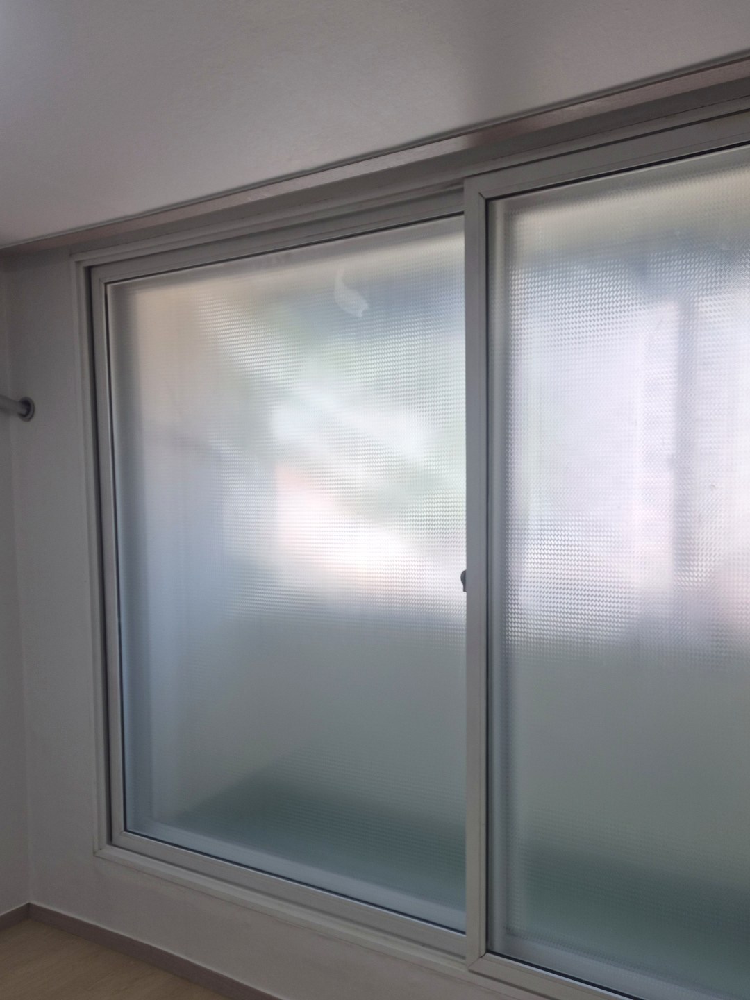
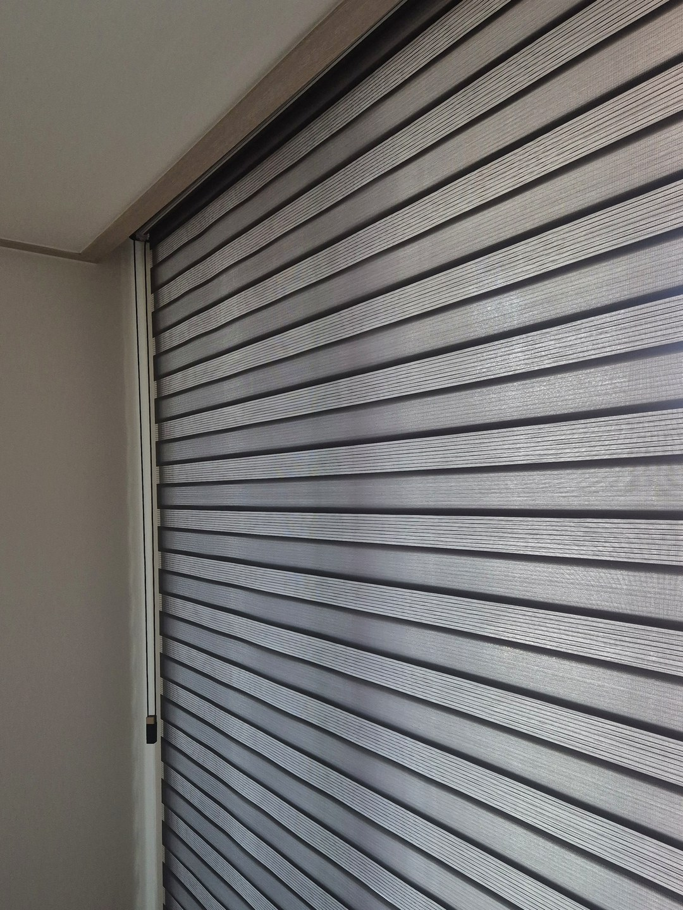
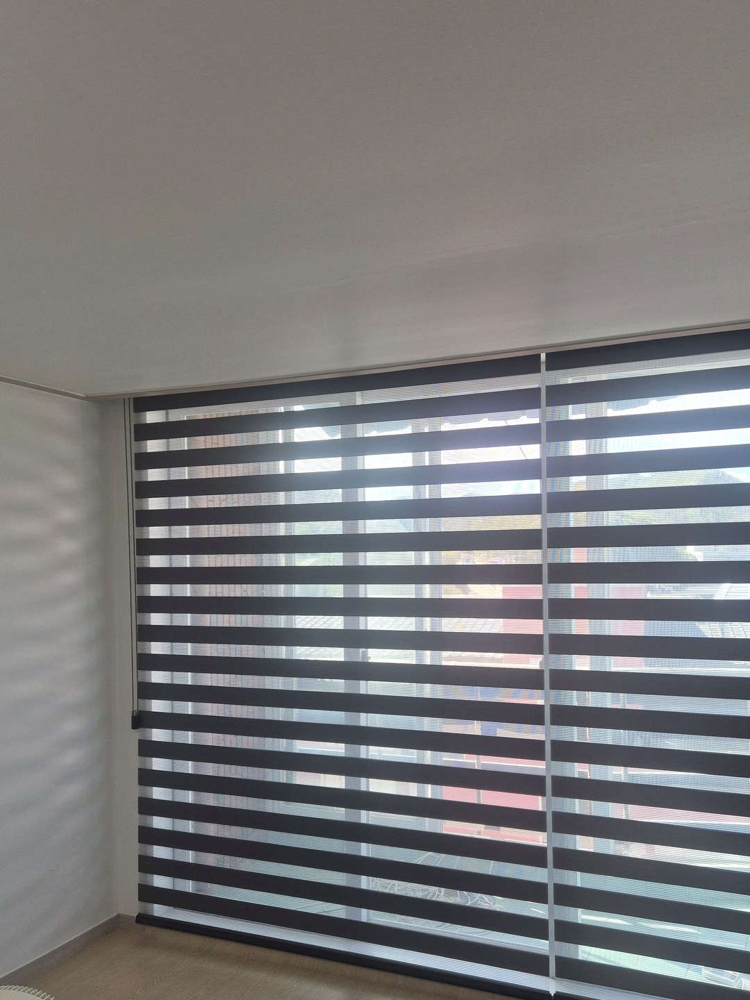
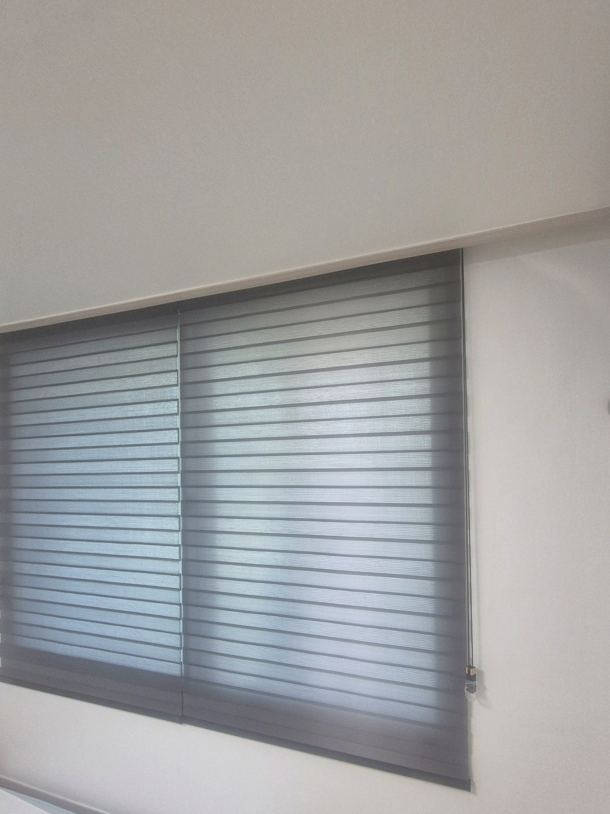
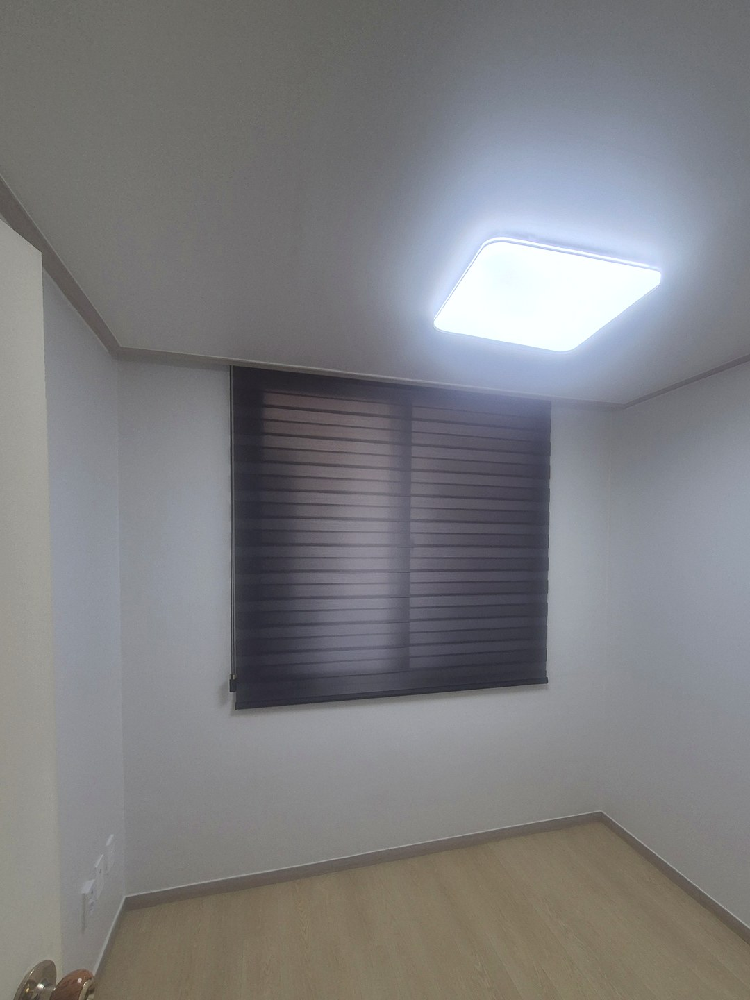

2026년 9월 12일 시공
청송 직원숙소
그레이 콤비블라인드 시공후기

청송에 있는 직원용 숙소 시공입니다.
거실과 방마다 창에 아무것도 걸려 있지 않은 상태였고, 전부 그레이 콤비블라인드로 맞췄습니다.
이 글은 제품 이야기보다 창마다 어디에, 어떤 크기로 달았는지를 중심으로 적었습니다.
창틀 안이 아니라 천장 바로 아래에 달았습니다
블라인드는 창틀 안쪽에 쏙 넣어 다는 방법과, 창틀 바깥 위쪽에 달아 창을 덮는 방법이 있습니다.
창틀 안에 넣으면 깔끔해 보이지만, 창틀 폭만큼만 가려져 양옆으로 빛이 샙니다.
그리고 창틀 안에 손잡이나 방충망 레일이 있으면 블라인드가 걸립니다.
이 숙소는 창 위로 천장까지 벽이 조금밖에 없었습니다.
그래서 헤드레일을 천장 바로 아래에 붙이고, 창보다 넓게 뽑아 창틀 전체를 덮었습니다.


큰 창은 두 폭으로 나눴습니다
거실 창과 일부 방의 창은 천장 아래에서 바닥까지 내려오는 큰 창이었습니다.
이런 창을 한 장으로 만들면 폭이 넓어 원단이 무거워집니다.
무거우면 줄을 당길 때 힘이 들고, 오래 쓰면 한쪽으로 기울어 올라가기도 합니다.
그래서 가운데에서 나눠 두 폭으로 만들었습니다.
나누는 자리는 창의 가운데 창틀선에 맞췄습니다.
그래야 블라인드 이음매가 창살과 겹쳐 눈에 덜 띕니다.
두 폭이면 드나드는 쪽만 올려 두고 나머지는 내려 둘 수도 있습니다.

콤비블라인드는 올리지 않고도 빛을 조절합니다
콤비블라인드는 원단 두 겹에 불투명한 줄과 비치는 줄이 번갈아 들어 있습니다.
줄을 조금 당겨 두 겹의 줄무늬를 맞추면 비치는 줄끼리 겹쳐 빛이 들어옵니다.
엇갈리게 두면 불투명한 줄이 틈을 막아 가려집니다.
블라인드를 끝까지 올리고 내리지 않아도 되니, 여러 사람이 쓰는 숙소에서 다루기 쉬운 편입니다.
방마다 창 크기가 달라서 치수는 전부 따로 쟀습니다
같은 숙소인데도 창이 제각각이었습니다.
바닥까지 오는 창이 있는 방도 있었고, 허리 높이에 작은 창이 난 방도 있었습니다.
창이 달라도 치수를 하나로 뽑아 여러 장 만들면 편하겠지만, 그러면 어느 방은 남고 어느 방은 모자랍니다.
그래서 창마다 폭과 높이를 따로 재서 한 장씩 만들었습니다.
대신 원단과 색은 전부 같은 그레이로 묶었습니다.


작은 창은 한 폭으로 달았습니다
작은 창은 나눌 이유가 없어 한 폭으로 달았습니다.
폭이 좁으면 원단이 가벼워 한 장으로도 줄이 부드럽게 움직입니다.
미리 말씀드리는 것
콤비블라인드는 방을 완전히 캄캄하게 만들지는 못합니다.
줄무늬를 엇갈려 닫아도 원단 사이로 빛이 조금 들어옵니다.
낮에 주무셔야 하는 분이 쓰는 방이 있다면, 그 방만 암막 원단으로 따로 하는 편이 맞습니다.
숙소·기숙사를 맡고 계시다면
방 개수와 창 사진을 먼저 보내주시면 대략적인 견적을 말씀드립니다.
창 전체가 한 장에 들어오게 찍어 주시면 됩니다.
학교·회사 기숙사처럼 방이 많은 곳은 기업·기관 전용관에 따로 정리해 두었습니다.